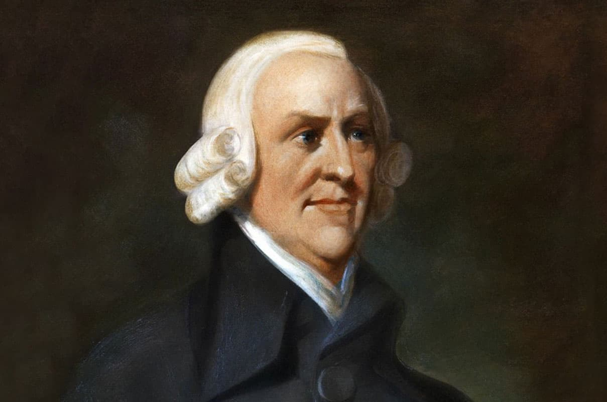
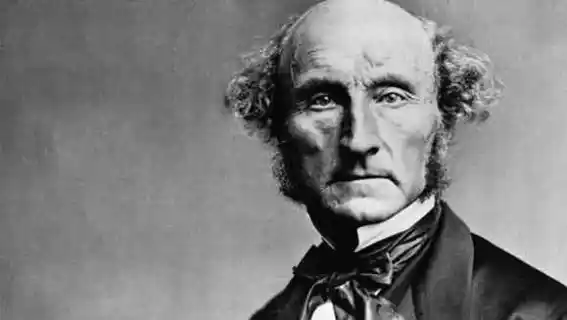

Политическая экономия — это наука, изучающая законы производства, распределения, обмена и потребления материальных благ. В отличие от прикладных хозяйственных дисциплин, она стремится понять общие и устойчивые закономерности экономической жизни, действующие независимо от воли отдельных людей.
Англия XVIII–XIX веков стала родиной классической школы политической экономии. Именно здесь промышленная революция впервые превратила мануфактурное производство в фабричное, породила массовый наёмный труд и сделала капиталистические отношения господствующими. На фоне бурного роста городов, развития мирового рынка и колониальной экспансии возникла необходимость в научном осмыслении новых экономических реалий.
Предшественниками классической политической экономии были меркантилисты, видевшие источник богатства в накоплении драгоценных металлов и активном внешнеторговом балансе. Однако с развитием капитализма стало ясно, что решающим фактором является не количество золота в казне, а производительный труд.
В конце XVII — начале XVIII века переход от меркантилистских идей к более объективному пониманию экономики был подготовлен работами физиократов во Франции (Франсуа Кенэ, Анн Робер Жак Тюрго) и английских мыслителей, которые постепенно отходили от узкой торговой логики к анализу всего хозяйственного процесса.
Адам Смит (1723–1790) считается основателем классической политической экономии. Его труд «Исследование о природе и причинах богатства народов» (1776) систематизировал и развил представления о том, что богатство общества создаётся трудом.
Смит ввёл понятие «разделения труда» как основного источника роста производительности. Он также говорил о «невидимой руке рынка» — механизме, при котором индивидуальные интересы предпринимателей через конкуренцию приводят к выгодным для общества результатам.
Однако в вопросе теории стоимости Смит был непоследователен: с одной стороны, он утверждал, что стоимость товаров определяется количеством труда, с другой — учитывал прибыль и ренту как части стоимости, что в дальнейшем породило споры среди экономистов.
Давид Рикардо (1772–1823) развил трудовую теорию стоимости и придал ей строгий и систематический вид. В «Началах политической экономии и налогообложения» (1817) он утверждал, что ценность товаров определяется количеством труда, необходимого для их производства при данных условиях.
Рикардо анализировал распределение доходов между тремя основными классами капиталистического общества:
Он пришёл к выводу, что рост земельной ренты в долгосрочной перспективе сокращает прибыль капиталистов, что создаёт внутренние противоречия в капитализме. Его теория сравнительных преимуществ в международной торговле обосновала выгоды специализации стран, что повлияло на мировую экономическую политику.
Томас Мальтус (1766–1834) в своём «Опыте о законе народонаселения» утверждал, что население имеет тенденцию расти быстрее, чем производство средств существования, что якобы неизбежно ведёт к бедности и голоду. Он считал, что рост благосостояния низших классов вызывает увеличение рождаемости, а значит, и обострение бедности.
Маркс и Энгельс резко критиковали Мальтуса за игнорирование социально-экономических причин бедности, называя его теорию «апологией капитализма». Тем не менее, мальтузианство оказало заметное влияние на экономические и социальные дискуссии XIX века.
Джон Стюарт Милль (1806–1873) подвёл своеобразный итог классической политической экономии. Он развил идеи утилитаризма и пытался совместить принципы свободного рынка с необходимостью социальных реформ. Милль признавал, что законы производства носят объективный характер, но распределение богатства зависит от социальных институтов и может быть изменено.
Милль стоял на грани между классическим либерализмом и зарождающимися социалистическими идеями, что отражало противоречивость эпохи.
Марксизм воспринял от классической английской школы её главный научный принцип — признание труда источником стоимости. Изучая Смита и Рикардо, Маркс показал, что стоимость товара определяется не только трудом вообще, но и общественно необходимым рабочим временем.
Главным вкладом Маркса стало открытие механизма прибавочной стоимости — формы, в которой капиталист присваивает неоплаченный труд наёмного рабочего. Он высоко ценил научную честность классиков, которые, несмотря на буржуазное мировоззрение, стремились выявить объективные законы капитализма. Однако, по мнению Маркса, они остановились на полпути, не сделав вывод о исторической ограниченности и преодолимости капитализма.